To enlarge, click some photos which have titles in light blue color background.
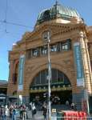 | 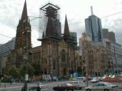 | 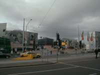 | 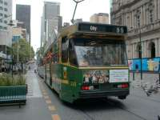 |
| Flinders Street Station | St Paul's Catherdral | Square | Tram |
If you come to Melbourne you may see this location at first. Frinder station is the entrance of Melbourne.
In front of the station you will be impressed with two buildings, one is solemn church which is historical and other is a very new and modern square.
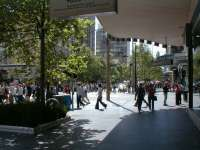 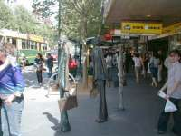 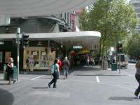 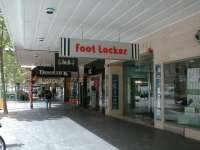
Swan street is the main street. One side has a lot of shops in a row, especially souvenir shops are outstanding. Other side has historical buildings or modern huge buildings.
In the middle way trams are working hard.
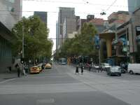 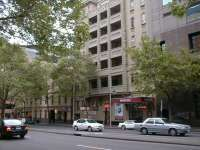 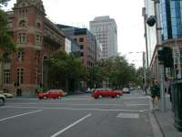 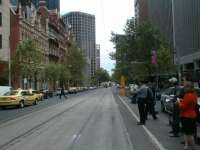
Melbourne city is not so large that you would walk from end to end. In some city Australia public transportation such as Tram or Buss are free. As for Melbourne City-loop-tram is free.
Buildings are a mixture of traditional Europe style, especially England, and modern style.
The harmony is appreciated by both residents and visitors.
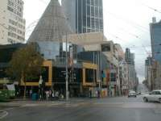 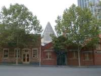 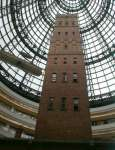 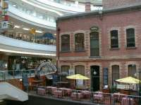 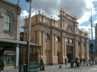 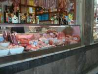 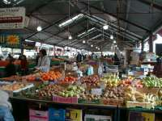 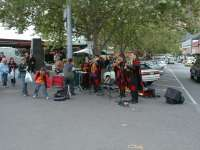 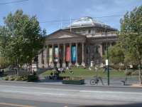 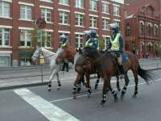 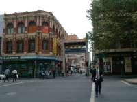 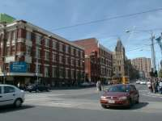
Someone said Melbourne welcome everyone who come to but don't force anyone to come. I really felt People in Melbourne was very kind. When I were lost everyone directed the way kindly. While Sydney is a thriving town but might be a little bit danger, I heard as a rumor. I felt that Melbourne has much time and space not only in city but also in the mind of citizen.
Swan Street
Swan Street 01 Swan Street 02 Swan Street 03 Swan Street 04 streets
streets 01 streets 02 streets 03 streets 04 around Melbourne Central
Melbourne Central is not only the biggest shopping center but also unique building. It was design by Japanese famous architect, Kurokawa Kisyou. Main part is a small building which was covered another building. That is why main part was historical bullet factory so the part was remained and well designed. I expected there was a Japanese department store, Daimaru, but it disappeard because of business depression.
Melbourne Central 01 Melbourne Central 02 Melbourne Central 03 Melbourne Central 04 Queen Victoria Market
Victoria Market is called the kichen of Melbourne. Every time I visited it prospered.
A lot of tourists came by busses. Everything for daily use is here; vegetables, meet, clothes, souse pans, beddings, souvenirs for tourists and so on.
Victoria Market 01 Victoria Market 02 Victoria Market 03 Victoria Market 04 others
The State Iibrary an event China Town a street
{kind=link}
{kind=link}
{kind=link}
{kind=link}
{kind=link}
{kind=link}
{kind=link}
{kind=link}
{kind=link}
{kind=link}
{kind=link}
{kind=link}
{kind=link}